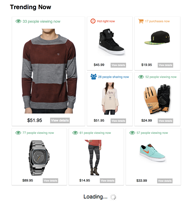

Hi, I'm Zach Zuber.
I like to build things.
I live by a simple motto; get shit done and have fun.
Why I am the best person for Basecamp
I am not the best designer. I am not the best writer. I am not even the best front end developer. But I am the best person for Basecamp. Why? I love getting shit done. I love rolling up my sleeves, getting my hands dirty, learning, and solving problems.
Whether I am jumping into a Rails app to fix a bug, sketching out a new page, or picking up the phone to talk with a customer, I tinker, listen, and observe my way to find the best solution. The best solution wins, not the biggest ego or loudest voice.
Some people think you either have talent or you don't. I say that's bullshit. Hard work and persistence, along with constantly seeking feedback and applying that feedback, develops talent. Most people cannot or will not put in the work. I do.
What other people have to say about me. - Neal Sales-Griffin, CEO Starter League
Why I love Basecamp
It helps me get shit done. It helps me organize my thoughts, communication with others and gives me a sense of ownership over projects. It has made me a better thinker, writer, and communicator. Before I would write one draft and push send. Now I rewrite and rewrite before pushing send to make sure I am clearly communicating what needs to be shared.
Biggest lesson learned from using Basecamp is how critical communication and collaboration are. Also, how bad most people are at it. They are underrated skills. I thought I was a good at both until I started using Basecamp. Happy to say I am more confident in my writing and collaboration abilities these days from using it on a daily basis.
It's all in the details
Basecamp is a awesome product that is backed by great technology, design, support and systems infrastructure. Plus it does cool things like...
Simplifies peoples lives.


Takes care of people.

Relates to people.

Makes people smile.

These things matter to you. Me too.
What other people have to say about me. - Neal Sales-Griffin, CEO Starter League
Why I give a damn
Six months ago I lost my brother. From September 8 at 9:17am to September 13, I grew more as a person then I had in the previous 22 years of my life. A couple months after my brother's passing Neal asked me what has changed. At the time I couldn't articulate it, but I can now.
Everything. My perspective and priorities are focused on what really matters.
Priorities
-
People, it's what life is all about. My brother knew this. Whether he was at work cracking jokes, hosting dinners or lending a hand when someone needed it, Kyle cared about people. I do too.
-
Self-sufficiency, I'm not talking about becoming Bear Grylls. Instead, becoming a life long leaner and building the skills that allow me to me to live the life I want.
-
Time, is limited and our most valuable asset. I want to spend my time on things that matter. With people I respect and like. Life is too short to do work you hate.
-
Happiness, it's a choice. We are all crowded around the same poker table. Only you can choose how to play the hand you're dealt.
Perspective
-
Why. Most people don't seek the why. I do. Knowing the why brings clarity, opens up communication, builds connections and leads to a better understanding.
-
Take action. No excuses. If I want something I go after it.
-
Keep it real. I'm honest and make sure to communication clearly, making sure expectations are understood.
-
Being open. I don't let the fear of not understanding keep me from learning and gaining new perspectives.
-
Reflect. On my choices. On my conversations. On my experiences. There is something to learn from everything you do.
What other people have to say about me. - Daniel Lopes, Lead Designer Starter League
On the same page
When I think of Basecamp the following comes to mind.

You believe in this and I do too.
What other people have to say about me. - Daniel Lopes, Lead Designer Starter League
Why I am different
Perspective is skill most people lack. They see what's in front of them and nothing more. To me that's such a limited live. I purposely seek new perspectives. Whether it's through food, conversations, tinkering or just exploring what's around. It has become a hobby.
Graduating from the Starter League I took this mentality into the startup I joined, BeNoticed. The concept was at ideas sketched on the back of napkins and a powerpoint walkthrough. From January 14 to November 22, 2013 I struggled, excelled, got frustrated, and grew more professionaly than ever before. Ultimate lesson learned, there's more to a product then building a rails app.
Over those eleven and a half months I was the back and front end developer. Designer. Marketer. Customer support. Copywriter. Systems administrator and any other role that needed to be filled to launch BeNoticed. Getting my hands dirty and seeking to learn as much as possible.
I am in no way an expert at any of them, but I understand the importance of each one and how connected they all are. You can write the best code in the world but it does no good if the product is hard to use. Your design can be a masterpiece but who cares if your site keeps going down. Seeking and appreciating how other disciplines operate is critical to understanding a company.
Great teams
Building BeNoticed exposed me to what it takes to build a great technology company. You must have a solid foundation. I call this foundation the five pillars. These pillars are:

These all are not necessary for company to be successful financially. But to be a great company and push your industry forward, they are.
Most companies silo off these departments, setting their company up like a Ford assembly plant. I believe that is a mistake because it cuts off communication and collaboration. Causing people not to understand or appreciate how the other parts of the plant operate.
I can look at a product from all these angles, because I have done the job of each of these pillars. Again, I am in no way an expert at any of them, but I understand the importance of each one to the larger picture. You can write Hemingway worthy copy, but it doesn't matter if the product's functionality is buggy. Your application can be the best in it's category, but if your support sucks people will leave you.
What other people have to say about me. - Daniel Lopes, Lead Designer Starter League
Ugly is part of the process
If you're looking for a kick-ass person who thrives on getting shit done, having fun and has no problem being wrong and learning, then I'm your guy.


- 


BeNoticed
From a sketch on the back of a napkin to launch, I coded, designed, and programmed the entire application. This experiences taught me how valuble it is to seek and understand things.


SiteVibes
I was brought in to take SiteVibes off the shelf and bring it to market. I was responsible for product design and business development. This experience taught me that it's all about working with the right people.


Writing
Words matter. I designed the landing page for SiteVibes and used Optimizley to A/B copy.


Code
I'm hosting this page on Github, so you can see my code. View it here.
What other people have to say about me. - Jack Maller, Student Starter School
Life away from the computer
As much as I love working on my computer, sometimes I just have to get away.
Music
I listen to music for six hours a day. It is a part who I am. I am as eclectic as my taste in music.


Brewing
There is nothing better than a good beer and a good conversation. Whether I brewed the beer or enjoying someone else's, I appreicate the craft.


{kind=link}
Being Curious George
I like to explore. Food, traveling, and everything in between. Gaining new perspectives is a hobby.
Two roads diverged in a wood, and I -
I took the one less traveled by, And that has made all the difference.
- Robert Frost
Calculated risk, made simple
I actively seek better ways to solve problems. Whether that means emailing customers with clearly communicated questions to better understand their problems. User testing a page design to see how people actually interact with it. I want to get better at what I do and work on something meaningful that millions of people use. I want to be around people that activley seek to better themsevles. That is why I want to join the Basecamp team.
Let's grab a chat
If you're as excited as I am, shoot me an email and let's chat.